このリポジトリには、Hands-On Autonomous Cloud Sessionのラボが含まれています。あなたの環境にアクセスするために必要な情報を提供します。
ハンズオンのために、参加者のために手順を自動化し、シームレスにします。
以下のものが提供されます。
- Dynatrace環境
- 稼働中のKubernetesサーバー
- Sockshopアプリケーション(サンプルアプリ)
- Dev環境とProd環境と
- Sockshopアプリケーション(サンプルアプリ)
- Jenkins環境
- Ansible環境
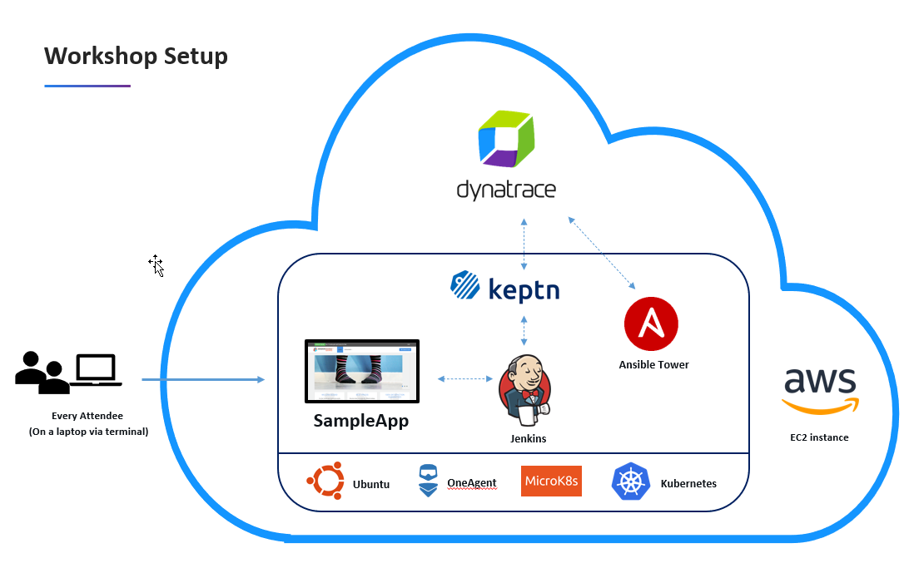
事前準備
- Chromeブラウザ
- 認証情報を含むAutonmous Workshopメール
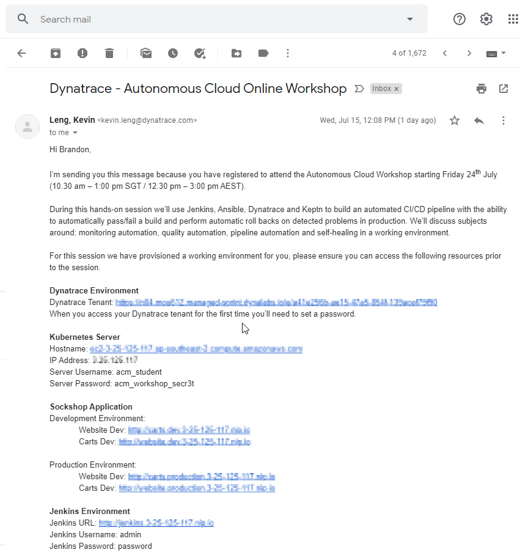
学習内容
- パイプライン（Sockshop）をJenkinsでデプロイする
- Keptnのインストール
- JenkinsとKeptnおよびDynatraceの統合
- Jenkins＋KeptnとDynatraceを使って
- Quality Gatesの評価による品質の自動化
- テストの自動化 負荷テストとパフォーマンステスト
- Ansibleによるセルフヒーリングで運用を自動化する
- サービスとしてのセルフヒーリング
Jenkinsへのログイン
メールに記載されている認証情報を使って、WebブラウザでJenkins環境にアクセスします。
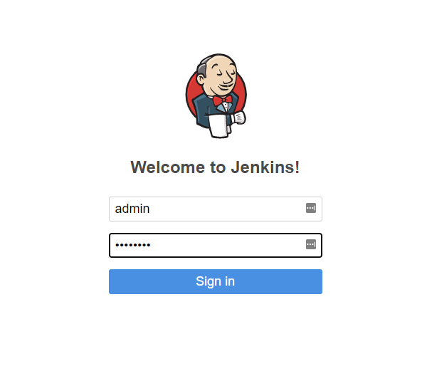
パイプラインの構築
ログインしたら、リストの中の "DeploySockShop"にマウスオーバーし、下矢印をクリックして "Build Now"を選択します。
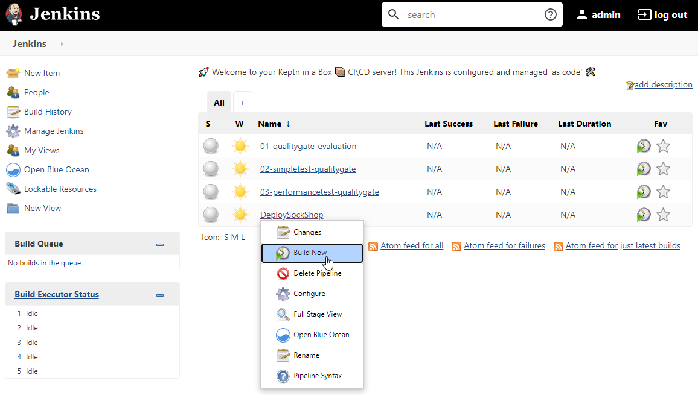
このプロセスは1～2分程度かかりますので、そのまま実行させます。
終了後、再び「DeploySockshop」をクリックすると、パイプラインビルドの様々な段階を確認することができます。
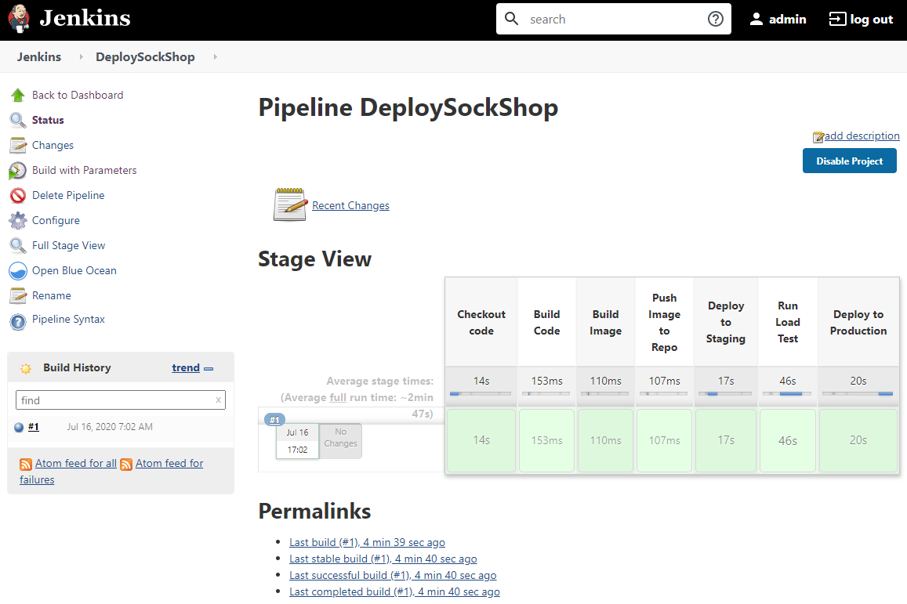
これはあくまでもパイプラインが動作しているデモなので、完了するまで待つ必要はありません。
Kubernetes インスタンスへのログイン
SSHターミナル（Putty、Terminal、MobaXtermなど）を使ってKubernetesサーバーにログインします。
メールに記載されている認証情報を使って、Kubernetes環境にアクセスします。
ログイン後、以下のコマンドを実行してKeptnをインストールします
。 Keptnのセットアップの一部は、以下のシェルスクリプトで自動化されています。
cd dtacmworkshop/keptn
sudo ./installKeptn.sh
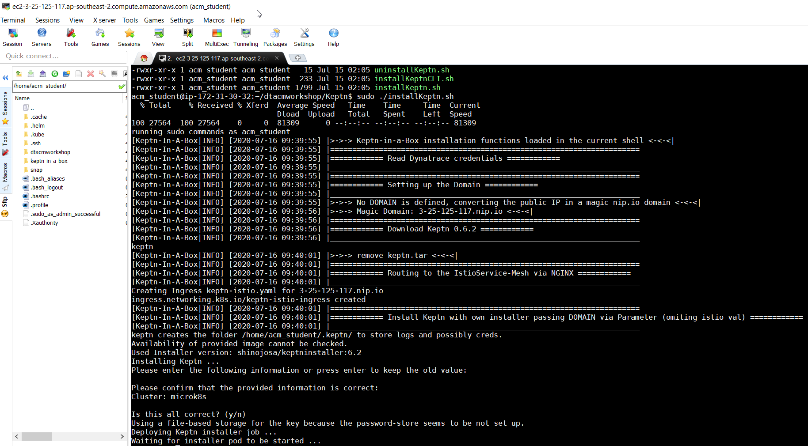
Keptnは、セットアップに必要なコンポーネントをインストールします。 セットアップには2～3分かかります。
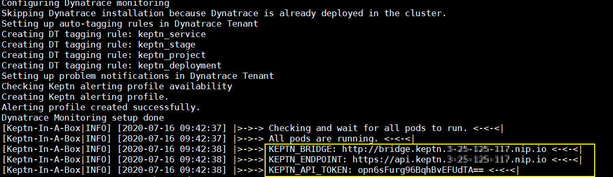
セットアップが完了したら、次のステップで必要となるkeptn API tokenをメモしてください。 また、Keptn BridgeとAPI Endpointを使用することもできます。
例e:
KEPTN BRIDGE: http://bridge.keptn.YOUR-IP-ADDRESS.nip.io
KEPTN ENDPOINT: https://api.keptn.YOUR-IP-ADDRESS.nip.io/swagger-ui/
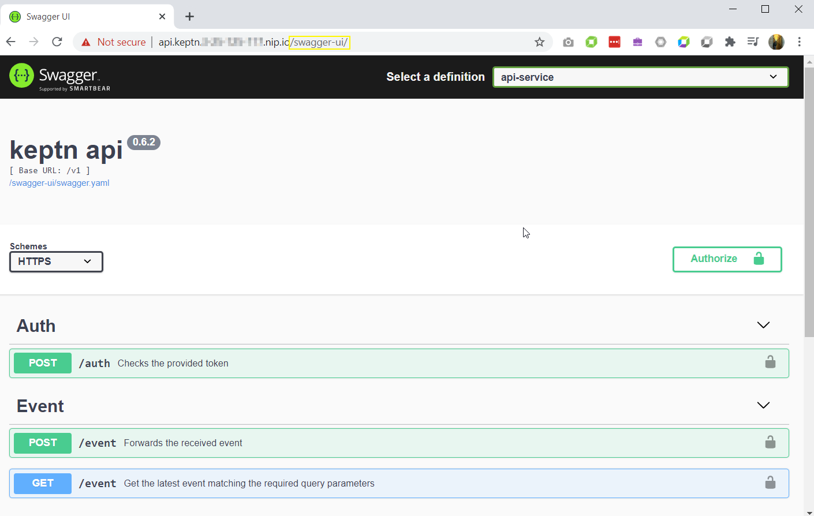 Keptn APIのSwagger UIを表示するには、最後に「/swagger-ui/」を付けることに注意してください。
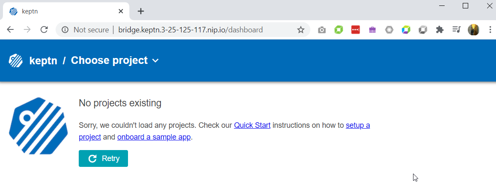 現在、Keptnのブリッジではプロジェクトは動いていませんが、次のステップで作成する予定です。
Jenkins内でのKeptnプラグインの設定
Jenkinsに戻って、Jenkins（左上から）> Manage Jenkins > Configure Systemを選択します。
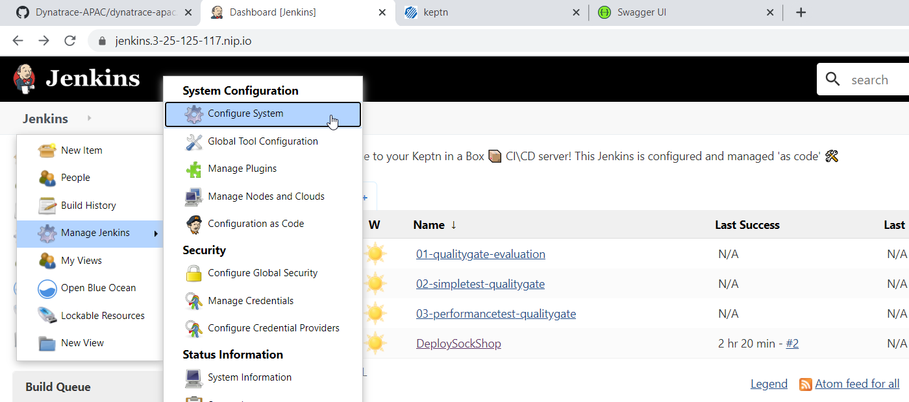
スクロールダウンして、「Global Properties」の下にあるフィールドに、ターミナルからのKEPTN API Tokenを入力します
。 Save**"をクリックして設定を保存します。
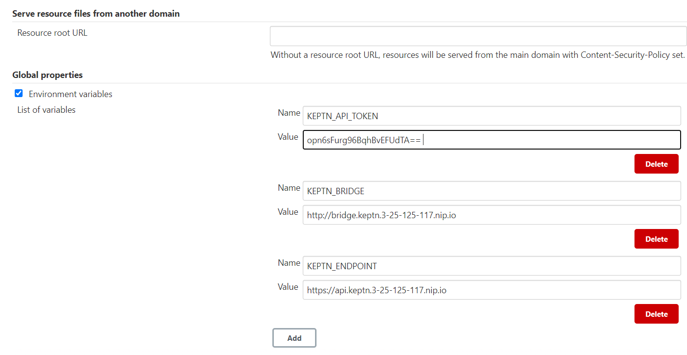
ステップはラボの前に事前に設定されています。プラグインの詳細については、GithubのKeptn Jenkins Shared Libraryを参照してください。
今回はJenkins Pipelineを使って、KeptnでSLI/SLOベースのQuality Gate Evaluationを誘発します。 これは、KeptnのCLIやAPIを使って行うこともできます。

Jenkins内で、リスト内の "01-qualitygate-evaluation"にマウスオーバーし、下矢印をクリックして "Build Now"を選択します。
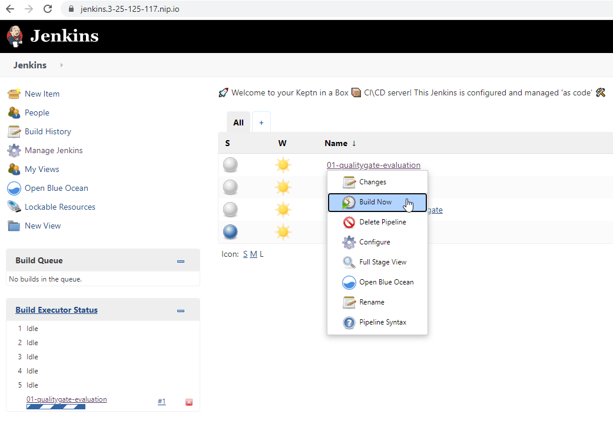
Jenkinsのデフォルトでは、パイプラインのパラメータをスキャンしていないため、最初のビルドは失敗します。01-qualitygate-evaluation**"をクリックして、パイプラインを掘り下げます。
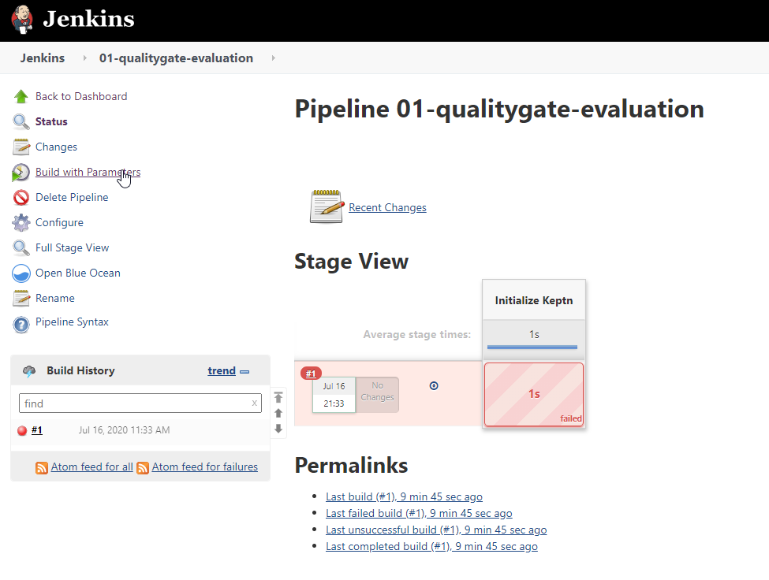
01-qualitygate-evaluation "をクリックし、左メニューの"Build with Parameters "**を選択します。
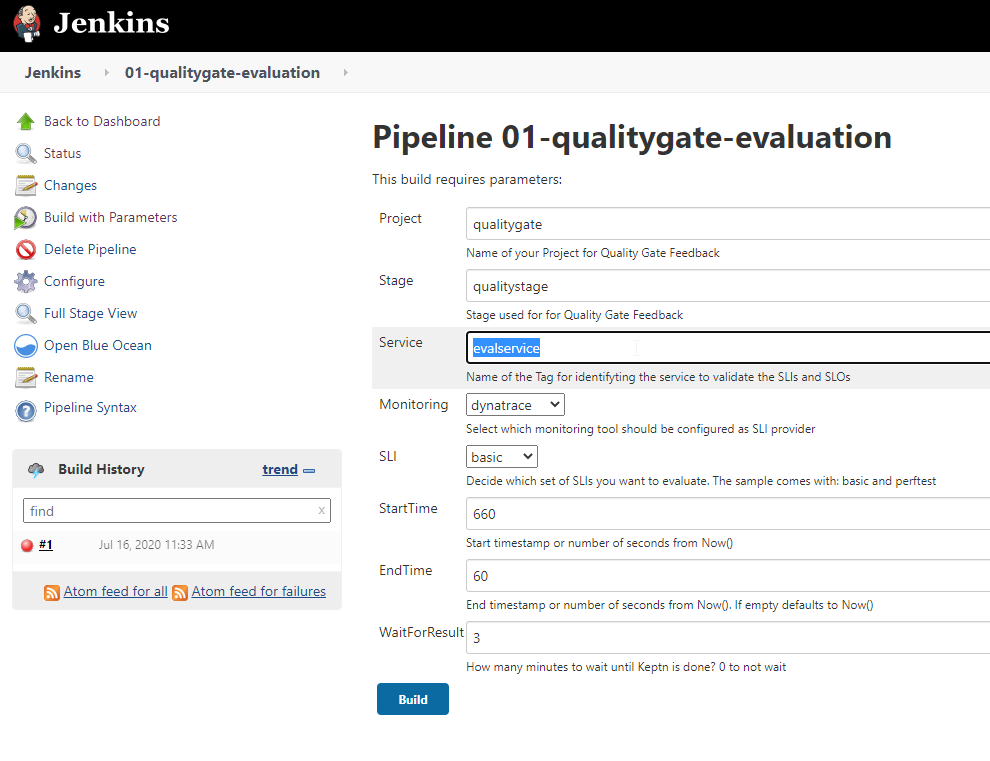
事前に設定したフォームと同様に、Dynatrace内の"evalservice "タグを使用して、SLIとSLOを検証する適切なサービスを特定します。このタグの名前は、Jenkinsパイプラインにパラメータとして渡すことができます。そこで、まずDynatrace内でサービスにタグを付ける必要があります。
Dynatrace環境にログイン
メールに記載されている認証情報を使って、WebブラウザでJenkins環境にアクセスします。
。 初めてDynatraceテナントにアクセスする際には、パスワードを設定する必要があります。
。
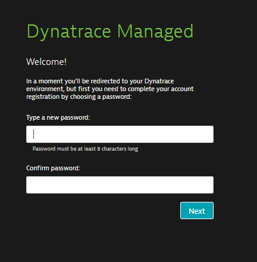
Dynatraceにログインすると、あらかじめ設定されたダッシュボードが表示されます。
Dynatrace内でのタグの設定
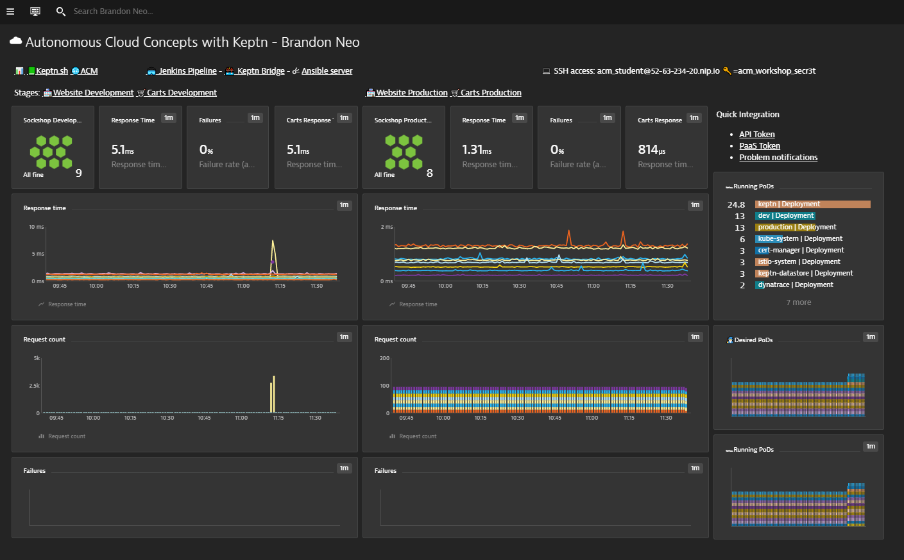
このプレビルドダッシュボードには、様々なポータルに素早くアクセスできるリンクも含まれています。
左側のナビゲーションバーで「Transactions and Services」を選択し、「front-end」サービスを選択します。
。 これは開発または生産サービスのいずれかになります。
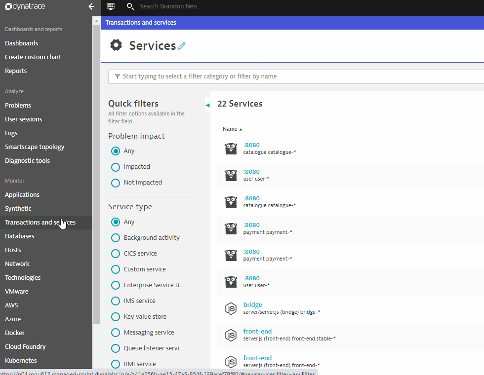
ドロップダウンメニューの "プロパティとタグ"から "タグの追加"をクリックし、タグとして "evalservice"を入力します。
Jenkinsでパイプラインを構築する
Jenkinsで "Build"ボタンをクリックしてパイプラインを実行します。
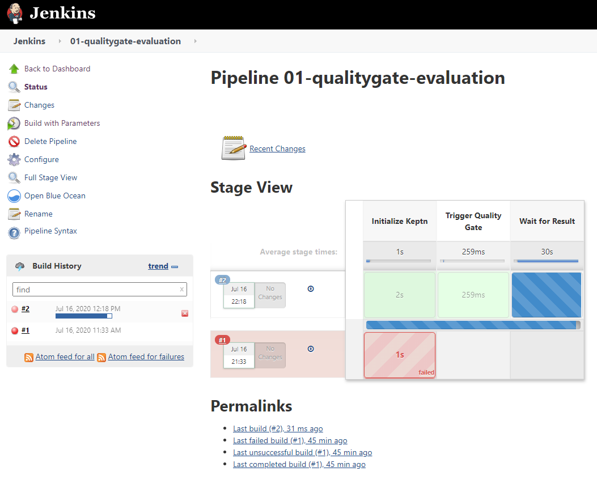
パイプラインが完了すると、KeptnのブリッジとDynatraceに変更が反映されているのがわかります。 Dynatrace内では、新しいカスタム情報イベントも発見できます。
。 この新しいイベントには、JenkinsからのJobURLやJobName、KeptnのソースやKeptnのブリッジなど、品質ゲートの結果の詳細が含まれています。
。 また、リンクからはJenkinのポータルとKeptnのポータルに移動し、それぞれの詳細情報が表示されます。
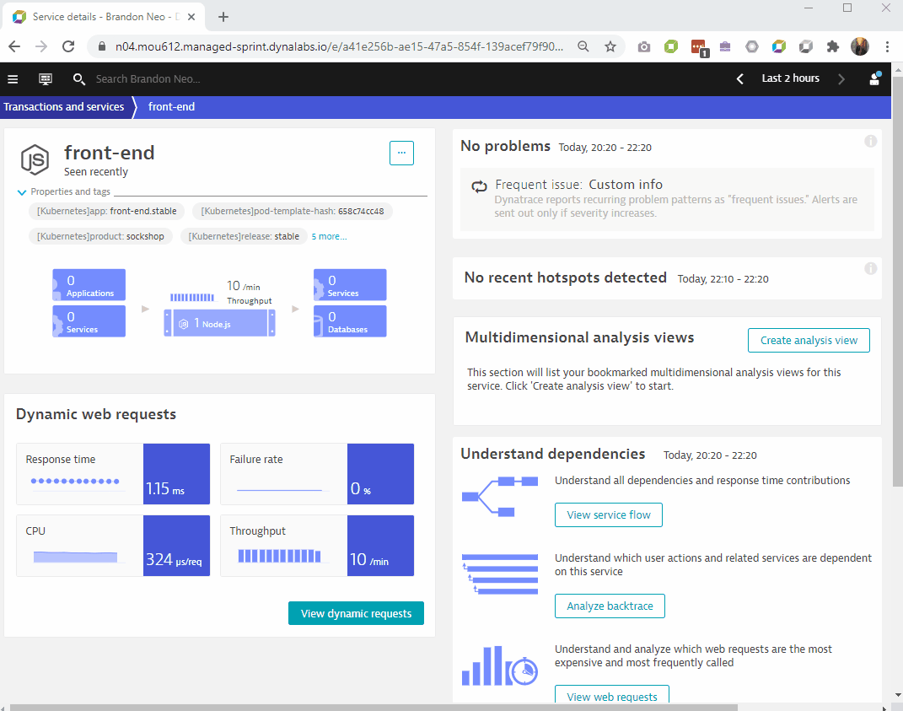
このハンズオンのセットアップについては、チュートリアルの全文をこちらでご覧いただけます。
パイプラインでの負荷テスト
これは、前回のビルドの拡張バージョンで、パイプラインにはステージの1つに非常にシンプルなロードテスト機能が組み込まれています。
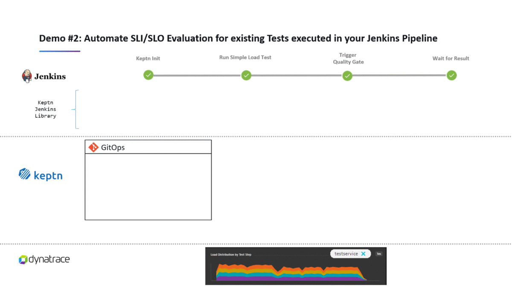
"Transactions and Services"にアクセスし、"[Kubernetes]stage:dev"タグと "testservice"タグでフィルタリングしてサービスを識別します。
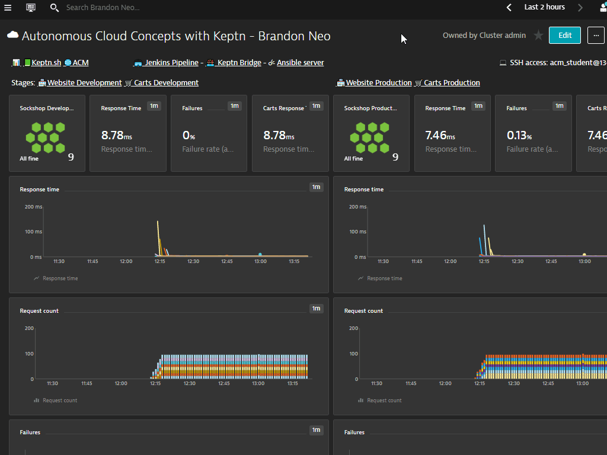
Jenkinsに戻り、「Back to Dashboard」をクリックすると、Jenkinのパイプラインの一覧に戻ります。
。 リストの中の「02-simpletest-qualitygate」にマウスオーバーし、下矢印をクリックして「Build Now」を選択します。 先ほどの実験のように、最初のビルドは失敗しますが、2回目の試行では「Build with parameters」にドリルインすることができます。
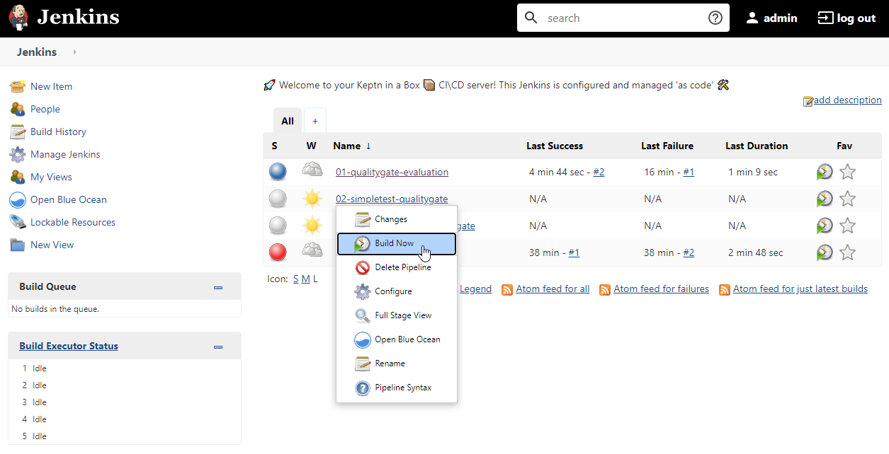
フォームを次の詳細で変更します:
。 サービスです。テストサービス
DeploymentURI: WebサイトのデプロイメントURL（メールに記載されているもの）
。 URLパスを /:homepage;/category.html:Category
完了したら、"Build"ボタンをクリックして、パイプラインを開始します。
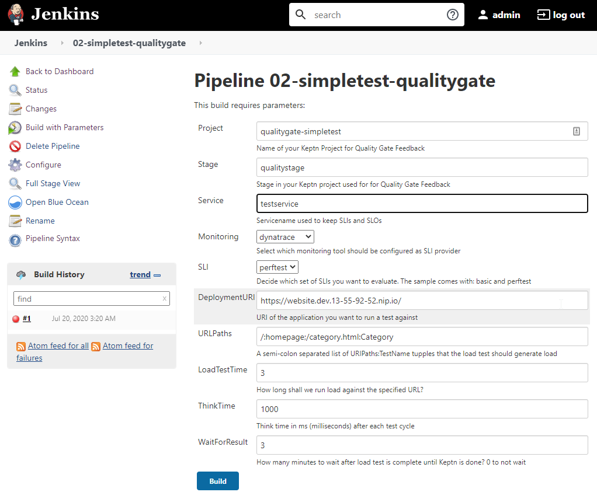
また、ダッシュボードからCarts DevのURLを取得することもできます。
。 単に右クリックして、リンクアドレスをコピーするだけです。
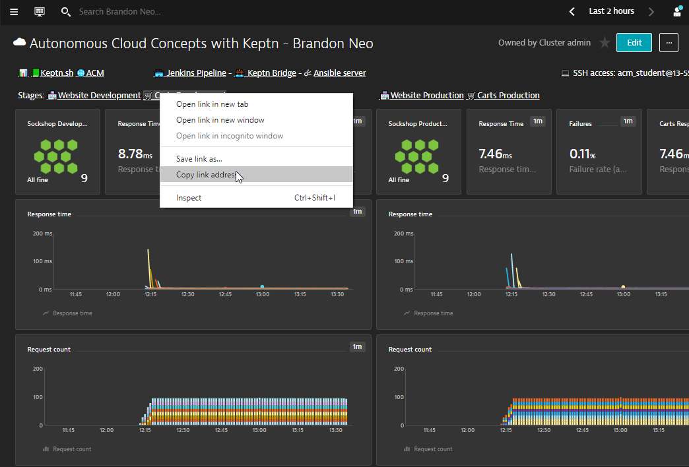
完成したら、Keptnのブリッジ/DynatraceのFrontend Service/Jenkinsで変更点を見てみましょう。
計算されたサービスメトリクスに基づいて、追加のSLIを見つけることができます。
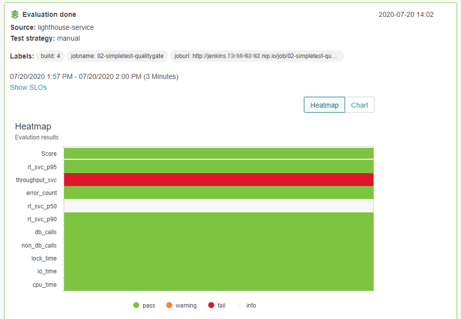
このハンズオンのセットアップの詳細については、完全なチュートリアルをこちらでご覧いただけます。
パイプラインでのパフォーマンステスト
このラボは前回のラボを発展させたもので、Jenkinsのパイプラインの一部としてJenkinsに簡単なテストを実行させました。KeptnはSLI/SLOベースの品質ゲート評価に使用されました。このチュートリアルでは、Keptn を使用して、JMeter を使用した実際のテストの実行も行います。
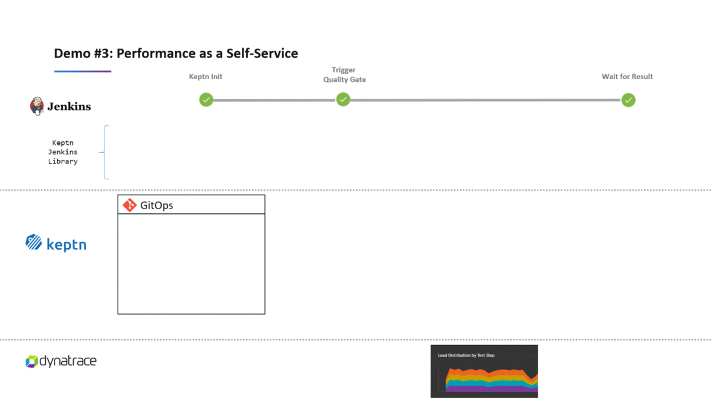
また、テストの実行には、定義されたSLIとして計算されたサービスメトリクスを使用します。 これらのサービスメトリクスの作成は、ラボのセットアップの一部として作成しました。
。 これらのメトリクスは、Settings > Server-side service monitoring > Calculated Service metrics
にあります。
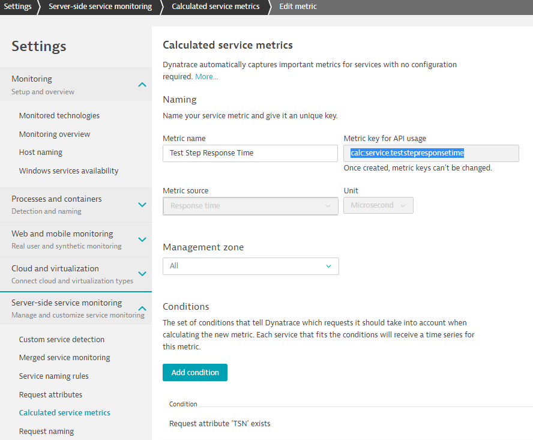
これらのメトリクスとその寸法は、SLI の実行中に使用されます。
。 すでに「testservice」タグを追加しているので、Jenkins内で3つ目のパイプラインを実行するだけです。
。 Jenkinsに戻り、「03-performancetest-qualitygate」をクリックします。
以下のようになります。 以下の詳細でフォームを変更します:
。 サービス。テストサービス
DeploymentURI: WebサイトのデプロイメントURL（メールに記載されているもの
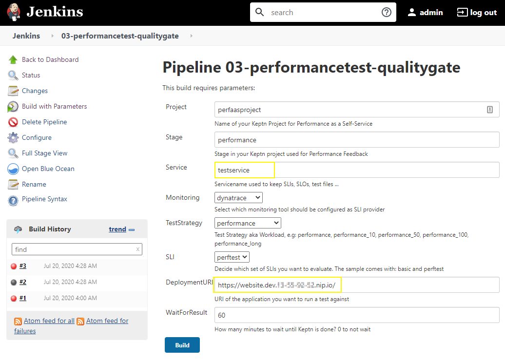
完了したら、"Build"ボタンをクリックしてパイプラインを開始します。
ダッシュボードからCarts DevのURLを取得することもできます。
。 右クリックしてリンクアドレスをコピーするだけです。
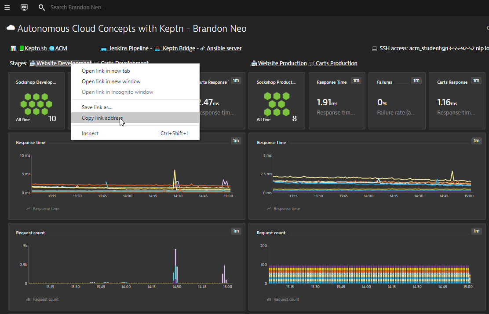
完了したら、Keptnのブリッジ/DynatraceのFrontend Service/Jenkinsで変更点を確認できます。
。 Dynatrace内では、品質ゲートのパス結果を生成した自動化されたパフォーマンステストを見ることができます。
。 また、Jenkinsだけでなく、Keptn's bridgeにもコンテキストを掘り下げることができます。
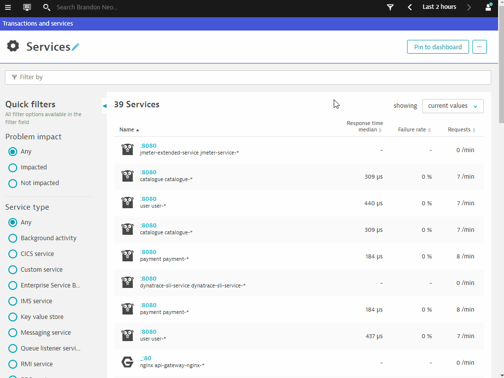
ここでは、KeptnのSLI/SLOベースのQuality Gatesを使って自動化することで、SampleApp Sockshopを修正します。
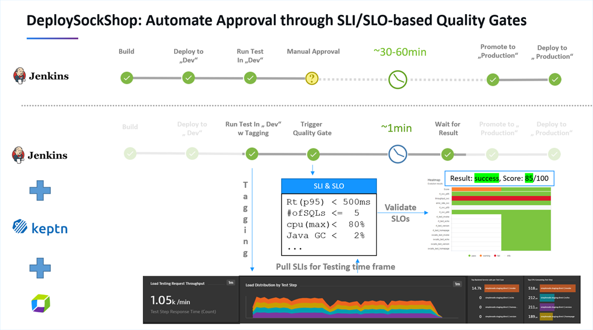
Jenkinsの中で、リストの中の「DeploySockShop」にマウスオーバーし、下矢印をクリックして「Configure」を選択します
。 別のブラウザタブを開き、Dynatrace APAC's Autonomous Cloud's Git Repoにアクセスします。
。 修正したSockShop Jenkinsfile raw file**をコピーして、JenkinsのPipelineセクション内に置き換えます。
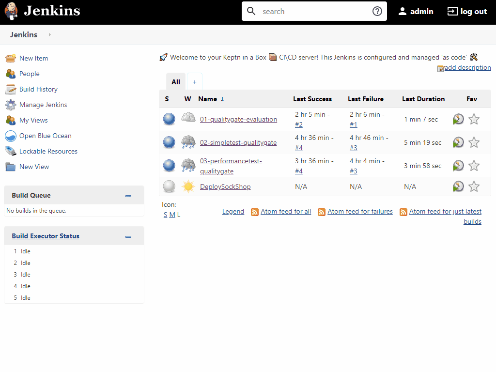
「保存」をクリックし、「Build with Parameters」のページで「Build Two」を選択してビルドを開始します。
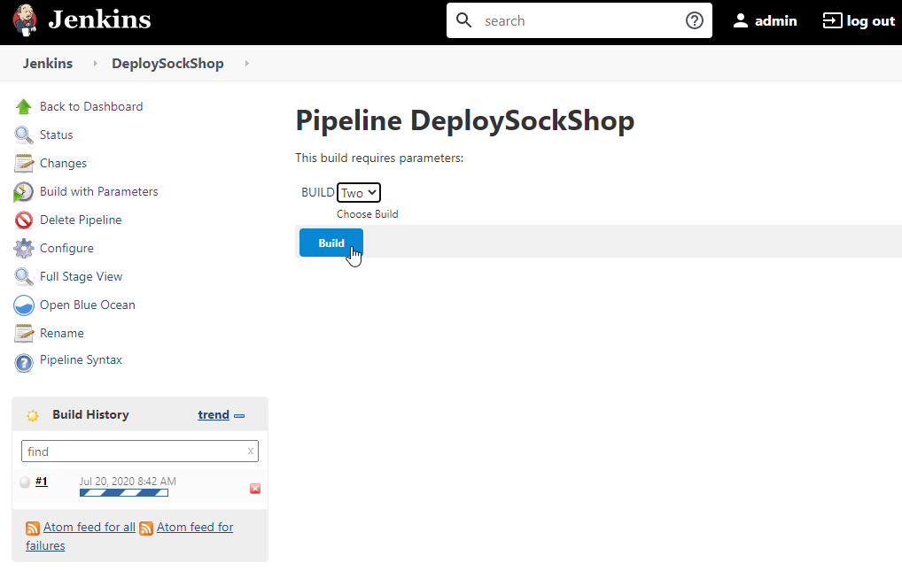
Dynatraceは、Ansibleなどの多くのランブック自動化ツールと統合されています。今回は、Ansibleを使って自己修復問題を紹介し、運用を自動化します。
カートサービスのための負荷の生成
SSHターミナル内で以下のコマンドを実行し、カートサービスのロードを開始します。
cd ~acm_student/dtacmworkshop/utils/
sudo ./cartsLoadTest.sh
Ansible Towerへのログイン
メールに記載されている認証情報を使って、WebブラウザでAnsible環境にアクセスします。
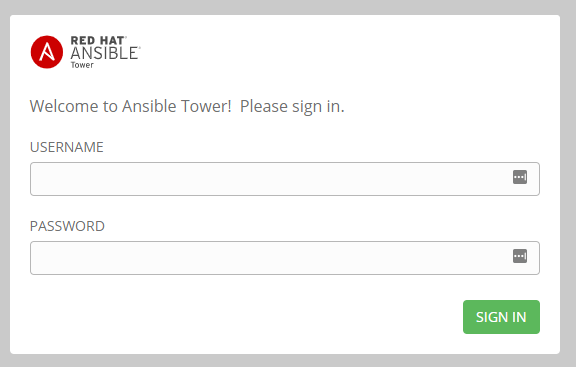
Dynatrace問題通知の設定
Ansible内で、左ナビゲーションの「Templates」をクリックし、Remediation Job templateのURLをコピーします。
DynatraceのUIで、設定 > 統合 > 問題通知 > 設定通知 > Ansible Towerに移動します
。 コピーしたAnsible TowerジョブテンプレートのURLを入力します
。 Ansibleにアクセスするための認証情報を入力する（メールで提供されたもの）
。 Sent test notification（テスト通知の送信）」ボタンをクリックして、設定を検証します
。 成功すると、緑色の確認メッセージが表示されます
。 設定の保存
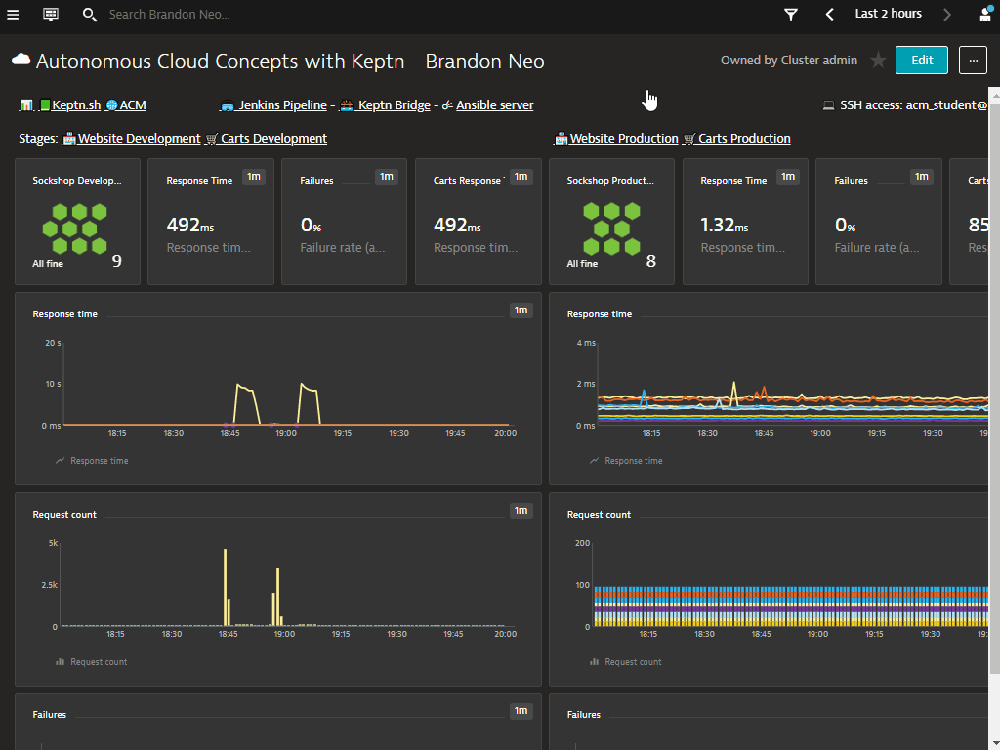
異常検知の調整
Dynatraceの問題検知と異常検知には、DynatraceのAI技術「DAVIS」が活用されています。つまり、DAVISは一つ一つのマイクロサービスがどのように振る舞うかを学習し、それらをベースラインとしています。そのため、現在のようなデモシナリオでは、AIエンジンをユーザー定義の値でオーバーライドして、故障率を人為的に増加させることで問題を発生させる必要があります。(注意：アプリケーションを実行し、エンドユーザートラフィックを数時間/数日シミュレートする場合は、このステップは必要ありません)
Dynatraceのテナントで、「Transaction & services」に移動し、タグ「[Kubernetes]stage:prod」でフィルタリングし、ItemsController Serviceを選択します
。 ItemsController Serviceのページで、サービス名の横にある3つのドット（ ... ）をクリックします。Edit
をクリックします。 次の画面で、anomaly detection settings**を以下のように編集します
。
- Global anomaly detection**を無効にする
- 固定しきい値**を使用して故障率の増加を検出する
- 任意の5分間に0 %のカスタム故障率のしきい値を超えた場合に警告する。
- 感度をHighに設定し、*1リクエスト/分**未満の値を変更する。
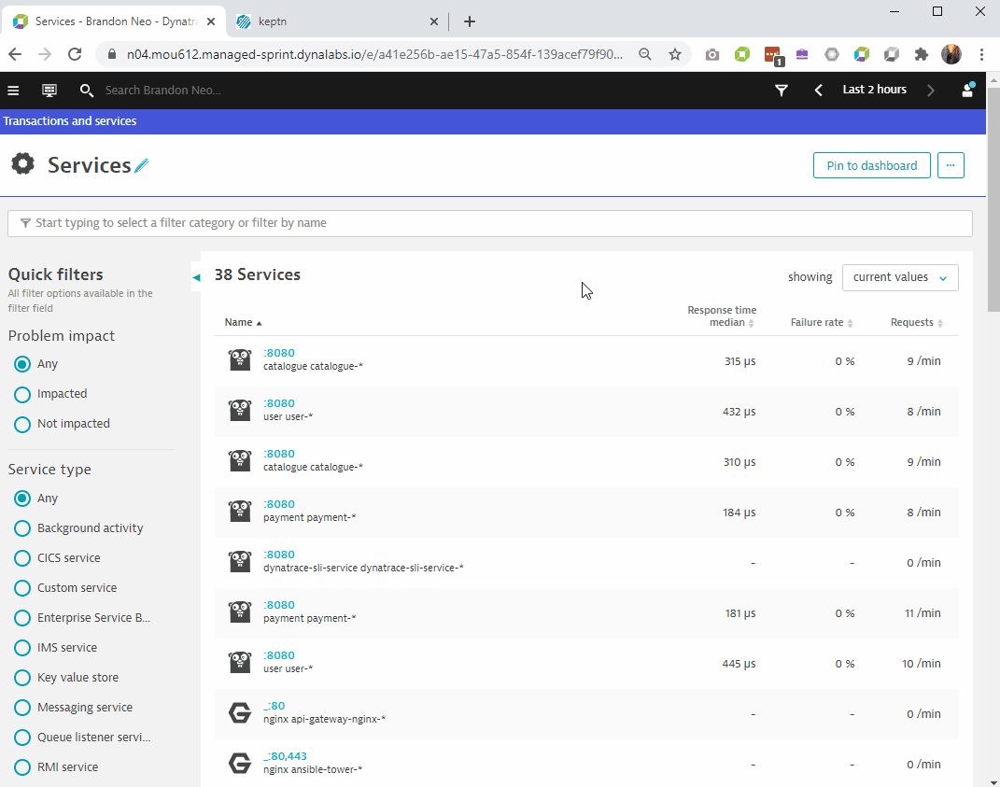
リメディエーション・プレイブックの起動
Ansible Tower の UI に戻ります。サイドメニューから、Resources -> Templatesに移動します。
。 ロケットアイコン**をクリックして、start-campaign playbookを起動します。
。 プロンプトのポップアップウィンドウで Next をクリックし、Launch をクリックします。
。 プレイブックが実行されると、ステータスが成功したことを確認します。
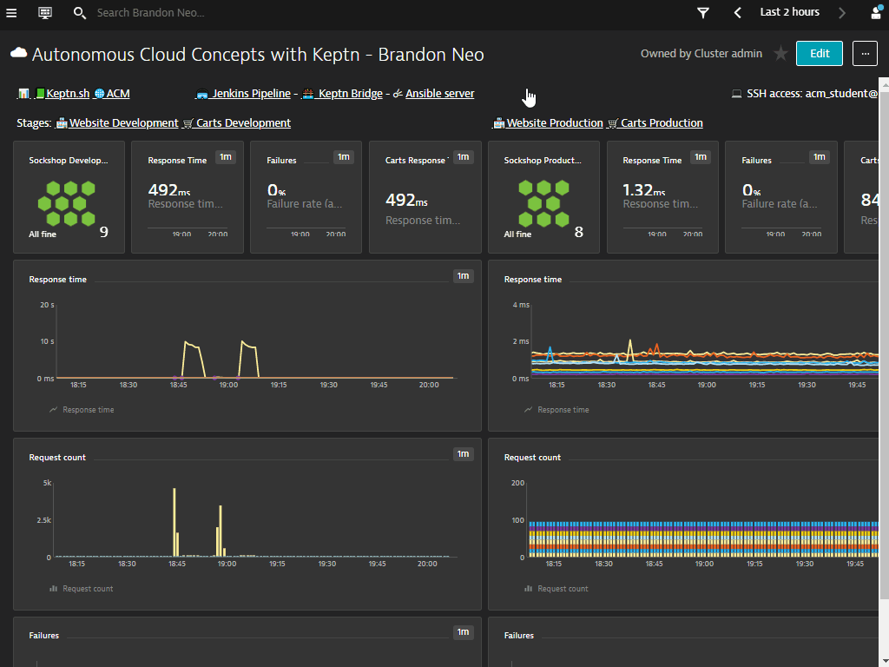
リメディエーションの観察
ItemsControllerに戻って、サービスイベントを見てみましょう。プロモーションレートが50％に変更されたときに、プレイブックがDynatraceに通知しています。
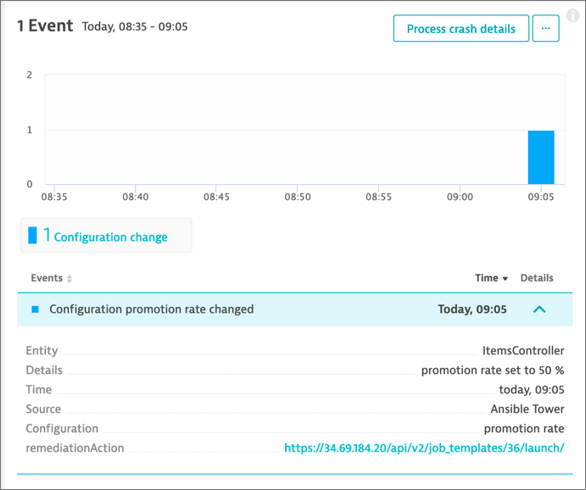
失敗率が増加し、最終的には Dynatrace が問題を検出していることがわかります。 何度かブラウザを更新する必要があるかもしれません。
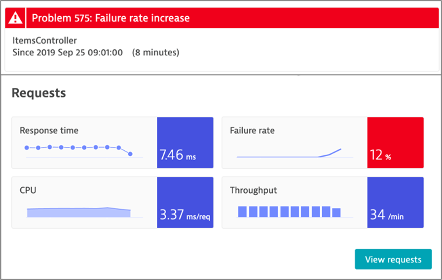
新たな問題が発生したことを確認してください。コメント欄には、Ansible Towerによって行われた修復アクションが表示されます
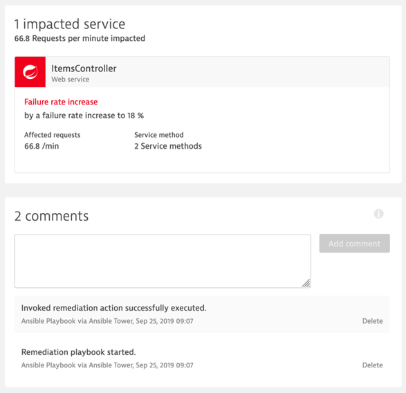
問題をドリルダウンします。 Ansible Tower によって報告された新しい構成変更イベントが表示されます。 プロモーションレートが0%に戻され、トランザクションの失敗に修正されました
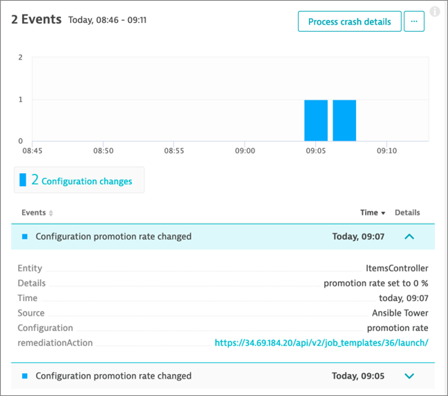
Ansible Tower で実行されたジョブ
- start-campaign (レートを50%に設定)
- 修復
- Dynatrace Problemにコメントをプッシュ
- 問題の詳細を取得
- 問題のコンテクストに関連する修復アクションの開始
- Dynatrace Problemの更新 キャンペーンの停止（レートを0％に設定
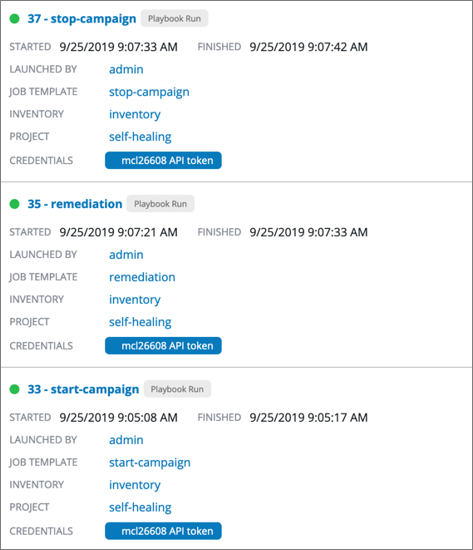
** 問題解決 - 問題は自動的に解決されました
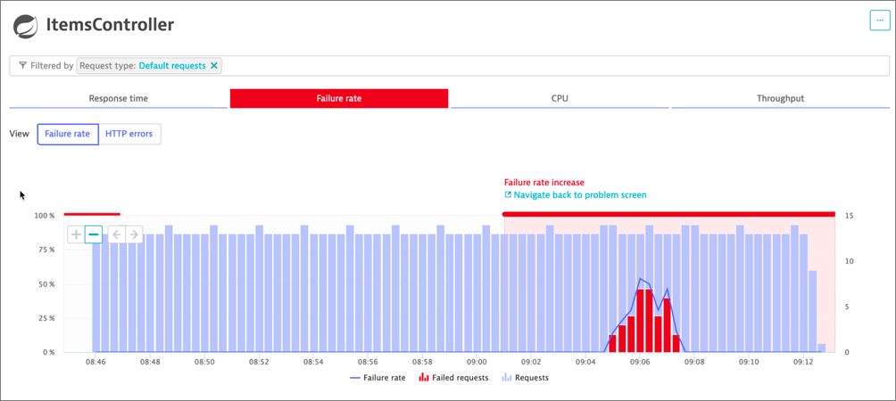
このラボを楽しんでいただき、お役に立てれば幸いです。ご意見、ご感想をお待ちしております。